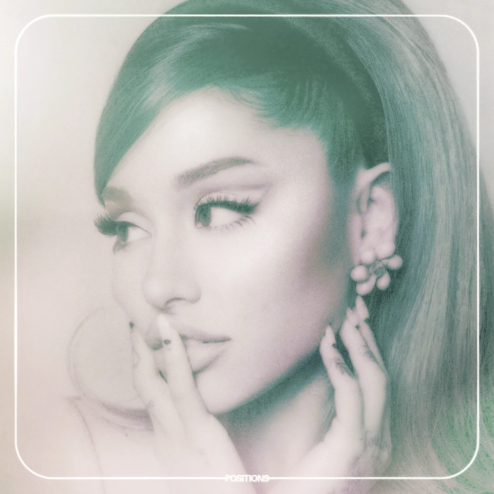
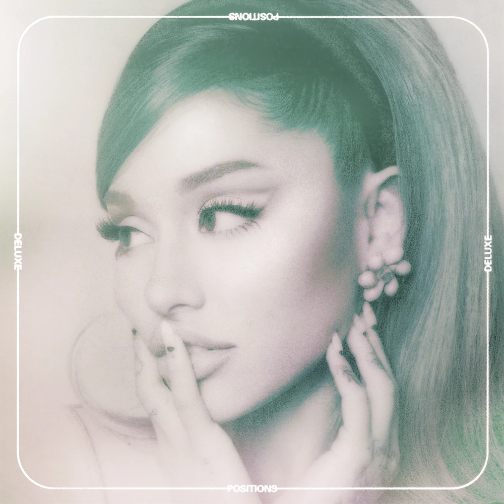
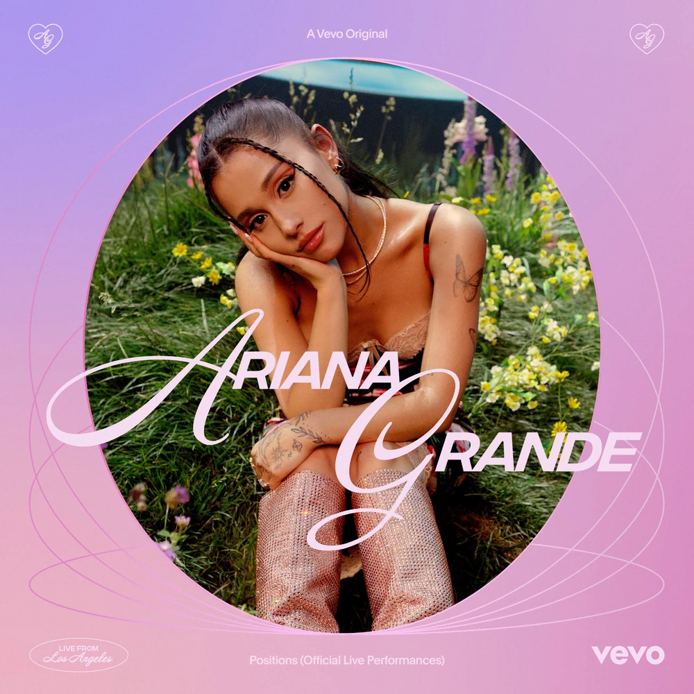
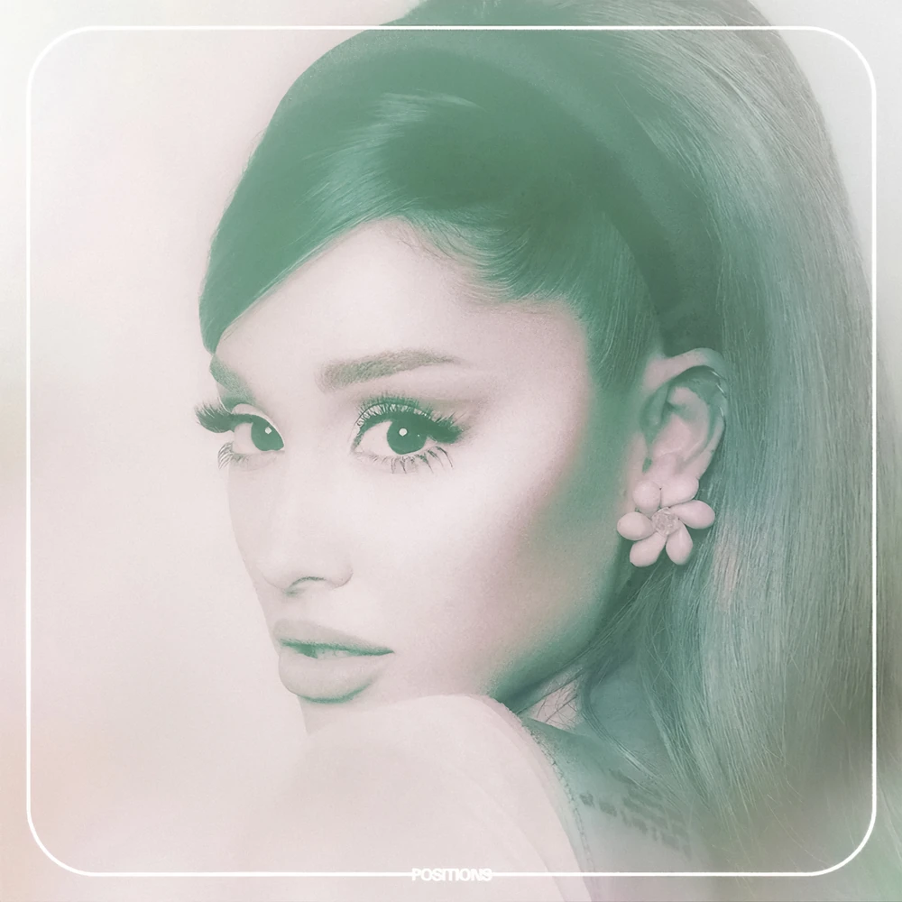
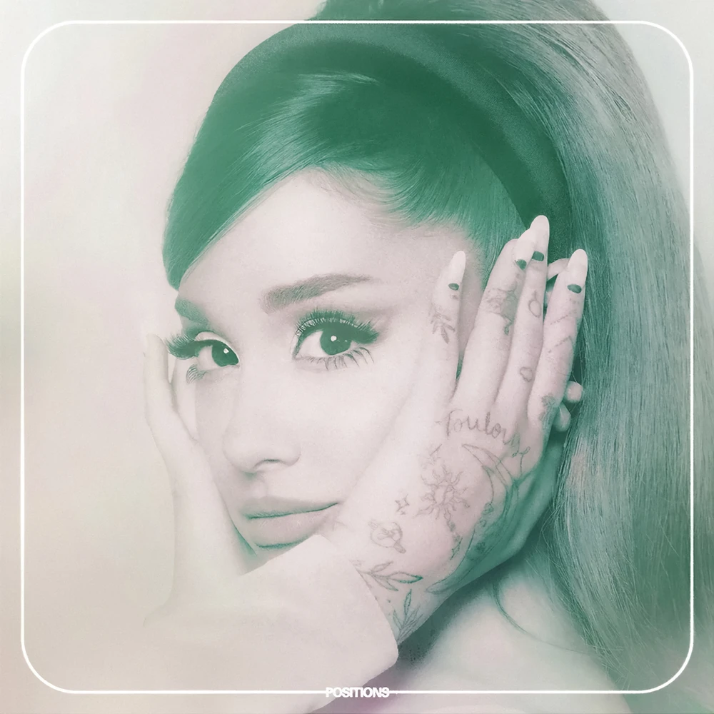
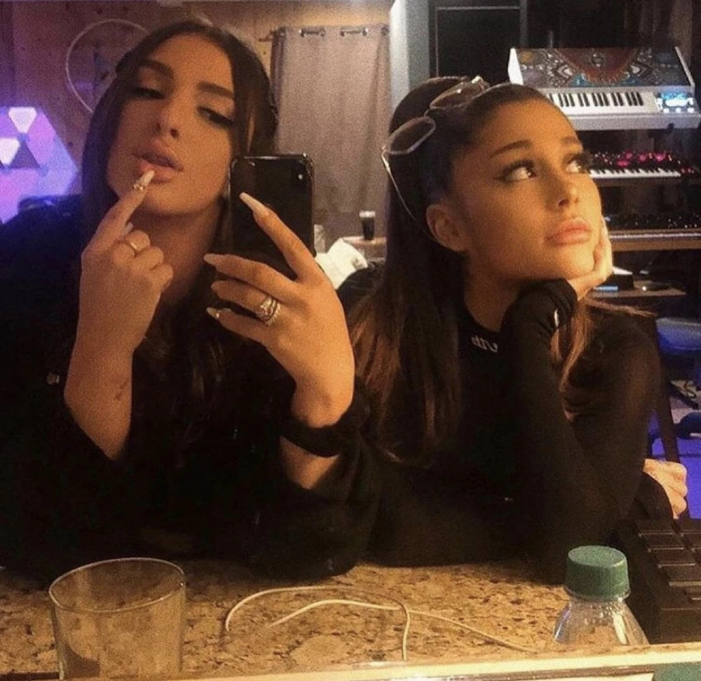

About ⋆ . ˚






Positions (commonly shortened as POS) is the sixth studio album by American singer Ariana Grande. It was released on October 30, 2020, by Republic Records. Centering on themes of romantic devotion, healing of the inner-self, physical attraction, and combating negativity, Positions sonically expands on the trap-infused R&B and pop first seen in its highly acclaimed predecessors, Sweetener (2018) and Thank U, Next (2019). Strings are present on the majority of the songs featured on the album. Used to sonically tie the album together, the strings contrast to the trap beats to provide a timeless-yet-modern feel.
Upon release, Positions was met with generally favorable reviews from critics and fans alike. Grande's vocals were universally praised, though the album's production split listeners. A commercial success, the album debuted at number one on the US Billboard 200, becoming Grande's third consecutive, and fifth overall album to do so.
On February 19, 2021, a deluxe version of the album was released with five new tracks, including a remix of "34+35" featuring American rappers Megan Thee Stallion and Doja Cat. Following the deluxe's release, Positions achieved more chart success, climbing back into the top 5 of the US Billboard 200.
Background ⋆ . ˚
On May 10, 2019, Grande posted a few Instagram stories saying "I have no plans for music (well not for ag6) but I'm always making it and I'm so happy and thank god for it" tagging Tommy Brown and Mr. Franks, although she started working on the album the previous month.

On March 24, 2020, Grande posted a 45 second snippet (later revealed to be "Nasty") on social media, confirming that the singer was working on a new album. Grande went relatively silent on new music for the following months, until September 14, 2020, when she posted an a-capella snippet of a song she was vocal arranging (later revealed to be "Positions") with the caption "brb". On October 14, 2020, she posted to her now-defunct Twitter acount saying, "I can't wait to give you my album this month", confirming both the existence, and release date, of her next album. A few days later, Grande posted a video of her typing out the word "positions" on a keyboard and launched two countdowns onto her website, counting down to October 23 and October 30, 2020.
Soon after the release of Positions, Tommy Parker (a producer who helped work on "love language" and "worst behavior") revealed that Grande and Tommy Brown had started working on an album in early-2020 and invited him to come help. Due to the COVID-19 pandemic, Grande eventually scrapped that entire early version of what would be her sixth studio album, and subsequently created Positions in quarantine instead.
On the fifth anniversary of the album, 7" vinyl versions of "34+35" and "Positions" were released. An extended play with Vevo's Official Live Performances of "pov", "positions", "safety net", "my hair", "34+35" and "off the table" was released on all streaming platforms.

On October 23, 2020, Grande revealed the album's cover art, shot by longtime collaborator and friend, Dave Meyers. The cover art was shot 2 months beforehand, on September 12th. The cover features a closeup shot of Grande looking away from the camera with her hands on her jaw. A minty-green filter is laced over the image, portraying the album's visual aesthetic: 60s-mod. A white border with rounded corners frames the image, with the album title at the bottom of the border. Two exclusive CD editions of Positions released with alternate covers. The Deluxe cover is the same as the standard cover except the word "DELUXE" was added around the border.
On February 1, 2021, Grande announced a deluxe edition of Positions, featuring four new tracks and the remix of "34+35" featuring Doja Cat and Megan Thee Stallion On February 9, 2021, Grande announced the release date of this reissue: February 19. Grande confirmed the titles of the four new tracks in the 34+35 remix coundown Q&A livestream.
Vevo Live Performance ⋆ . ˚
In the summer of 2021, a series of live performance recordings of the album was released in partnership with Vevo. Ariana performed "POV", "Positions", "Safety Net", "My Hair", "34+35", and "Off The Table". She was also joined by The Weeknd and Ty Dolla Sign for their respective collaborations. The live recordings were released on streaming services on October 30, 2025, for the fourth anniversary of the album.
Critical Reception ⋆ . ˚
The album received favorable reviews (despite not breaking any new ground) from music critics. Alexa Camp of "Slant" believed it did not offer enough new ideas or innovation. "Too many of the songs on Positions rely on the same mid-tempo trap-pop that populated Grande's previous two efforts, particularly Thank U, Next. What once seemed refreshing in its minimalism is quickly starting to feel insubstantial. Editor Hannah Mylrea describes it as "a pleasant listen, as an introduction to the next era of Grande's career, it's solid, but you can't help but feel it's missing some of her trademark sparkle." Compared to her previous albums , Mylrea states how "strength and perseverance threads throughout 'Positions', an album that finds Grande thriving. Positions "lacks the megawatt pop belters of previous releases" where The Guardian's Alexis Petridis agrees, writing: "Positions deals in polished professionalism, not pulse-quickening excitement. There isn't an obvious standout track...the overall effect is of individual tracks bleeding into one long slow-motion shot" rating the album 3 out of 5 stars.

While the album received praise for its vocals and musical arrangements, others noted there's much to be desired lyrically. Critics such as Alim Kheraj of i-D highlight the raunchiness of the album's entirety: "Ariana has one thing on her mind: sex. So much sex, the subsequent 13 tracks are some of the horniest songs that Ariana has ever released." Kate Soloman of The Telegraph agrees that "There are no tentpole hits, no obvious hooks and far too many words crammed into 14 relatively short and sometimes samey songs. But it explores new territory for the singer: new relationships, a new sound, a new sense of self."
However, critics such as The New Statesman's Emily Bootle, highlight the positives, "Positions is about emerging on the other side... with "no dud tracks". She emphasizes Grande's confidence and maturity with a sense of individual identity in "creating era-capturing music."
Commercial Performance ⋆ . ˚
Positions debuted at No. 1 on the US Billboard 200 with 174,000 album-equivalent units, of which 42,000 were pure album sales. This is Grande's fifth studio album to debut at the top of the chart since her previous Dangerous Woman debuted and peaked at No. 2, while Yours Truly, My Everything, Sweetener and Thank U, Next all debuted at No. 1 in 2013, 2014, 2018 and 2019 respectively. In addition, Positions earned the second-largest streaming week for a non-R&B/hip-hop or Latin album in 2020 in the US (173.54 million).

It also debuted at No. 1 on the UK Albums chart, racking up 27,500 chart sales. On the issue date November 14, 2020, every song on the album was charted on the Hot 100. The highest peaked song is "Positions" debuting at number 1. The lowest song being "Love Language" debuting at number 75.
Due to the album's weak commercial performance compared to her prior albums and other factors, some fans disliked the album. Ariana later addressed some reactions towards the album on social media and in interviews. On August 3, 2024, a fan commented on an Instagram post, stating that Eternal Sunshine is Grande's worst era and that they prefer Positions. Grande responded to this comment, saying "please go enjoy listening to it then ! so glad you finally like it. ♡ xx". On November 6, 2024, Ariana appeared on the Las Culturistas podcast with Matt Rodgers and Bowen Yang and gave a retrospective on the album: “As far as what my fans were saying, I got a little 'this is not what we want vibes' [...] I just remember that really put me in a cage of judging every single piece, I like scrapped so many things that I was going to put out.”
Sources ⋆ . ˚
Navigation Bar - Black & White Flower Image - Source: https://png.pngtree.com/png-vector/20240312/ourmid/pngtree-black-and-white-cute-flower-png-image_11935120.png
About - Positions Official Album Cover Image - Source: https://arianagrande.fandom.com/wiki/Positions?file=Positions_%E2%80%93_Album_Cover.jpg
About - Positions Animated Album Cover Image - Source: https://i.makeagif.com/media/4-17-2026/eocfub.gif
About - Positions Official Deluxe Album Cover Image - Source: https://arianagrande.fandom.com/wiki/Positions?file=Positions+%E2%80%93+Deluxe+Album+Cover.jpg
About - Positions Live Performance EP Cover Image - Source: https://arianagrande.fandom.com/wiki/Positions?file=Vevo-Sessions-Cover.jpeg
About - Positions Alternate Album Cover 1 Image - Source: https://arianagrande.fandom.com/wiki/Positions?file=Positions+%E2%80%93+Limited+Edition+Cover+1.jpg
About - Positions Alternate Album Cover 2 Image - Source: https://arianagrande.fandom.com/wiki/Positions?file=Positions+%E2%80%93+Limited+Edition+Cover+2.jpg
Background - Ariana in the studio recoding for Positions Image - Source: https://arianagrande.fandom.com/wiki/Positions?file=TBIM_studio.jpg
Background - Ariana in the Positions Photoshoot Image - Source: https://api.davemeyers.com/wp-content/uploads/2023/11/Ariana-Grande-Positions-2.jpg
Critical Reception - Ariana singing "Positions" in the Live Vevo Positions Performance Image - Source: https://ancre-magazine.com/wp-content/uploads/2021/07/ariana-grande-positions-live-vevo.png
Commercial Performance - Ariana in the Scrapped Music Video for "pov" Image - Source: https://pbs.twimg.com/media/G1Z3DGzWQAAAEGl.jpg
font "Karrilee" obtained from svg icons is licensed by CC BY 4.0
ALL OF THE WRITTEN MATERIAL ABOVE WERE COMPLETELY SOURCED AND TAKEN FROM THE OFFICIAL ARIANA GRANDE FANDOM WITH MINOR MODIFICATIONS. THE LINK TO THE WIKI IS HERE: https://arianagrande.fandom.com/wiki/Ariana_Grande